Surgical Monograph: Crohn's Disease
Comprehensive PGY-3 surgical framework covering pre-operative optimization, surgical indications, step-by-step ileocaecal resection, strictureplasty, perianal Seton drainage, and Rutgeerts score post-op management.
The surgeon's role is to manage complications that cannot be controlled medically, to restore bowel continuity where possible, and above all to conserve bowel length. Every centimetre of small bowel resected is a centimetre that cannot be replaced. A patient who has had three operations for Crohn's and is left with 80cm of small bowel is now a short bowel patient, a state that is far more debilitating than the original disease.
This is the philosophy that governs every decision in Crohn's surgery: minimum resection, maximum conservation, minimum stoma, maximum function.
Pre-operative Optimization & Preparation
Clinical Workup & Staging
Crohn's disease is highly heterogeneous. Before any operative planning, you must know three things about the patient's disease: where it is (location), what it is doing (behaviour), and what it has done before (prior surgery & medical therapy).
Disease Staging (Montreal Classification):
- Disease Location (L):
- L1: Terminal ileum (most common, 45%).
- L2: Colon only (20%).
- L3: Ileocolon (terminal ileum + colon) (25%).
- L4: Upper gastrointestinal tract (modifier added to L1-L3).
- Disease Behaviour (B):
- B1: Inflammatory (non-stricturing, non-penetrating): standard early pattern. Responsive to medical therapy.
- B2: Stricturing: luminal narrowing causing obstructive symptoms; the primary surgical indication in small bowel Crohn's.
- B3: Penetrating: deep transmural tracts resulting in fistulas, phlegmons, or abscesses. Often mandates staged operations.
- p: Perianal modifier (e.g., B2p), tracks aggressive perineal tissue destruction.
Prior Surgical History & Small Bowel Estimate:
You must document the number of prior resections, estimated length of bowel resected, prior strictureplasty sites, and any history of temporary or permanent stomas. If the patient is approaching < 200 cm of remaining functional small bowel, small bowel preservation overrides all other technical considerations.
Current Medical Therapy Implications:
- Biologics (Anti-TNF, Integrins, IL-12/23): Associated with moderate post-operative infection risks. However, active guidelines do not support pre-operative biologic withdrawal; continue therapy and monitor closely post-op.
- Corticosteroids: The most significant medication affecting surgical risk. Prednisolone > 20 mg/day for > 6 weeks increases anastomotic leak, wound infection, and pelvic sepsis rates. Taper steroids to < 20 mg/day pre-operatively if feasible, or perform a defunctioning stoma.
- Immunomodulators (Azathioprine, 6-MP, Methotrexate): Associated with myelosuppression. Check full blood count; does not require pre-operative stoppage.
Surgical Indications in Crohn's Disease
The core principle of Crohn's surgery is to operate only for complications that cannot be controlled medically.
| Category | Indications | Clinical Presentation & Surgical Action |
|---|---|---|
| Absolute / Emergency | Free Perforation | Rare due to contiguous phlegmonous sealing. Presents as rigid peritonitis. Requires emergency laparotomy and resection; primary anastomosis is strictly contraindicated. |
| Toxic Megacolon | Colonic Crohn's with distension > 6 cm + systemic toxicity. If unresponsive to 24-48 hours of maximal medical therapy, perform subtotal colectomy + end ileostomy. | |
| Massive Haemorrhage | Uncontrolled, life-threatening mucosal bleeding refractory to endoscopic haemostasis. Requires segment-targeted resection. | |
| Strangulated SBO | Bowel ischemia secondary to stricturing herniation or volvulus. Immediate exploration. | |
| Strong / Elective | Symptomatic Strictures (B2) | Recurrent SBO unresponsive to medical therapy. Balloon dilation is first-line for short (< 5 cm) accessible segments; strictureplasty or resection for longer, multiple, or inaccessible strictures. |
| Intra-abdominal Abscess | Bridge with percutaneous drain + IV antibiotics. Perform staged surgical resection of the actively diseased "generator" segment once sepsis is controlled. | |
| Enteric Fistulas (B3) | Operate only if symptomatic (e.g., enteroenteral causing malabsorption, enterovesical causing recurrent UTIs, enterocutaneous, or rectovaginal). | |
| Medical Refractoriness | Failure of optimized medical therapy to control mucosal inflammation, causing unacceptable quality of life. |
Mandatory Pre-operative Investigations
- Optical Endoscopy: Colonoscopy with terminal ileal intubation and biopsy is mandatory before elective surgery. Defines colonic extent, excludes mucosal dysplasia, and confirms index diagnosis.
- MR Enterography (MRE): The gold standard for small bowel assessment. Differentiates active mucosal inflammation (high T2 mural signal, wall oedema, diffusion restriction, hyperenhancement) from inactive fibrotic stricturing (low T2 signal, minimal enhancement). Fibrotic strictures mandate surgery. MRE avoids cumulative lifetime radiation.
- CT Enterography (CTE): Outstanding for acute sepsis, gas-forming fistulous tracts, and pelvic abscess collections.
- Pelvic MRI: Absolute prerequisite for perianal Crohn's disease to map fistula tracts relative to the sphincters (Parks classification).
- Laboratory Profile: Complete blood count (anaemia, neutropenia), albumin (nutritional predictor), CRP/ESR (inflammation load), fecal calprotectin (baseline mucosal inflammation), Vitamin B12, and Vitamin D.
Risk Stratification & Pre-Op Nutrition
Pre-operative malnutrition is present in up to 75% of Crohn's patients requiring major surgery. Albumin < 30 g/L is a massive predictor of anastomotic breakdown, delayed wound healing, and post-operative sepsis.
Nutritional Optimization Protocol: If albumin is < 30 g/L, delay elective resection and institute 7 to 14 days of pre-operative nutritional support. Exclusive Enteral Nutrition (EEN) using elemental or polymeric diets is highly preferred over TPN as EEN directly reduces mucosal inflammatory cytokines and promotes mucosal healing.
| Risk Factor | Surgical Complication Risk | Mitigation & Management Protocol |
|---|---|---|
| Prednisolone > 20 mg/day | High risk of anastomotic leak, delayed wound healing, and fascial dehiscence. | Taper to < 20 mg/day pre-operatively if feasible. Implement perioperative stress-dose hydrocortisone. Lower the threshold for a defunctioning loop stoma. |
| Albumin < 30 g/L | Impaired collagen synthesis, high anastomotic breakdown rate. | Delay surgery for 7–14 days of EEN or TPN. Optimize protein intake to 1.5 g/kg/day. |
| Active Septic Phlegmon/Abscess | Infection spread, severe localized tissue fragility. | Perform image-guided percutaneous drainage + IV antibiotics. Settle local sepsis for 4–6 weeks before performing elective resection. |
| Active Tobacco Smoking | Doubles the risk of recurrence and stricture formation. | Mandatory pre-operative smoking cessation support. Smoking is the strongest modifiable postoperative recurrence factor. |
Immediate Pre-operative Preparation
- Bowel Preparation: For elective ileocaecal resection, standard mechanical bowel prep + oral antibiotics (neomycin + metronidazole) is preferred. Caution: Omit mechanical prep in patients with high-grade, tight proximal strictures to prevent acute colicky bowel obstruction.
- Perioperative Steroid Cover: Adrenally suppressed patients on long-term steroids must receive hydrocortisone cover:
- At induction: Hydrocortisone 100 mg IV stat.
- Post-op: Hydrocortisone 50 mg IV Q8H for the first 24–48 hours, followed by rapid taper back to their baseline oral prednisone dose.
- DVT Prophylaxis: Active Crohn's flares present a highly pro-thrombotic state. Institute pre-operative LMWH (12 hours prior to incision) and extend post-operative LMWH prophylaxis to 28 days post-discharge.
- Consent Non-Negotiables: Recurrence at the anastomosis (50% endoscopic recurrence at 12 months), temporary/permanent defunctioning stoma, short bowel syndrome, risk of pelvic nerve injury, and lifelong postoperative medical monitoring.
The Operative Game Plan
PROCEDURE A: Step-by-Step Ileocaecal Resection
Ileocaecal resection is the workhorse of Crohn's surgery, accounting for 70% of abdominal operations. The core principle is a narrow, non-oncological dissection conserving every millimeter of healthy bowel.

Pre-operative CT Enterography confirming localized active segmental ileitis with severe terminal ileal wall thickening, mucosal hyperenhancement, and Comb sign.

CTE illustrating fibrofatty proliferation ("creeping fat") wrapping around the inflamed ileal loop, correlating with active transmural inflammation.
Step-by-Step Open Technique:
- Access & Run the Bowel: Perform a lower midline laparotomy. Deliver the small bowel and run the entire small intestine from the Ligament of Treitz to the terminal ileum. Document all skip lesions. Estimate and record the remaining functional bowel length.
- Mobilisation: Mobilize the terminal ileum and right colon from lateral-to-medial. Delineate retroperitoneal structures; identify and protect the right ureter and gonadal vessels. Note: Mesentery in Crohn's is heavily thickened, friable, and vascular.
- Narrow Mesenteric Division: Perform mesenteric division close to the bowel wall (non-oncological). Do not perform high vascular ligation at the origin of the ileocolic artery. Control vessels individually with energy devices or suture ties; mass ligation is strictly avoided due to tissue friability.
- Bowel Division: Divide the ascending colon just above the caecal pole and the proximal ileum 2 cm proximal to macroscopic disease. Microscopic disease at the margin is acceptable; do not resect excessive healthy bowel to obtain microscopically clear margins.
- Anastomosis: Establish a side-to-side (functional end-to-end) stapled ileocolic anastomosis. Stapled side-to-side anastomoses have a wider calibre, which significantly reduces the risk of postoperative anastomotic recurrence compared to end-to-end handsewn configurations.
- Mesenteric Defect: Close the mesenteric defect with interrupted absorbable sutures to prevent internal herniation.
Laparoscopic Approach:
Laparoscopic resection is the elective standard of care. Port placement involves an umbilical camera port, plus working ports in the RLQ, LLQ, and suprapubic regions. Technical Pearl: Highly thickened, vascular mesentery is the main challenge. Utilize advanced bipolar/ultrasonic energy devices. Convert to open if pelvic phlegmon or deep dense retroperitoneal scarring precludes safe anatomical visualization.
PROCEDURE B: Bowel-Sparing Strictureplasty
Strictureplasty is the gold standard bowel-preserving operation. It is indicated for multiple fibrotic small bowel strictures in patients at high risk of short bowel syndrome. The diseased segment is opened longitudinally and closed transversely, widening the lumen without resecting bowel.
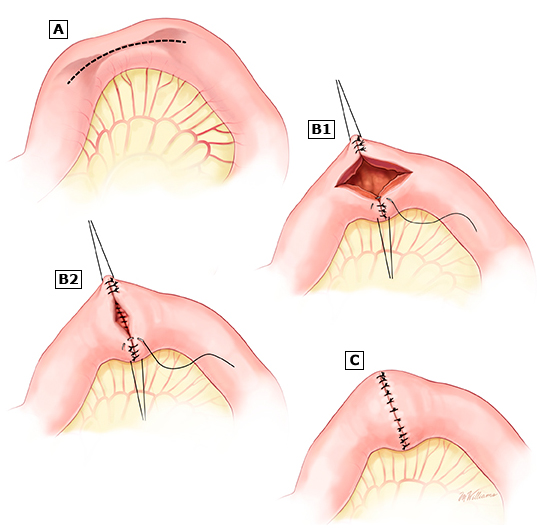
Indicated for short fibrotic strictures ≤ 5 – 7 cm. Antimesenteric longitudinal enterotomy closed transversely. Accounts for 85% of strictureplasties.
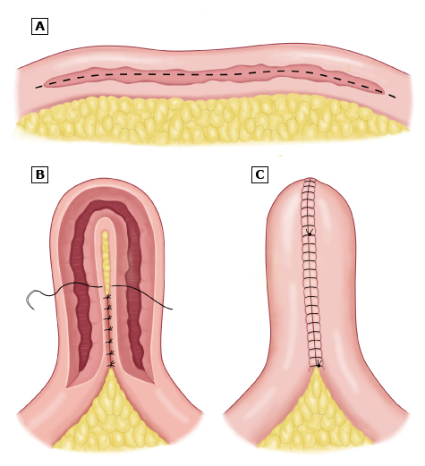
Indicated for medium strictures 10 – 20 cm. Bowel loop folded into a U-shape, opened, and anastomosed side-to-side to create a wide diverticular pouch.
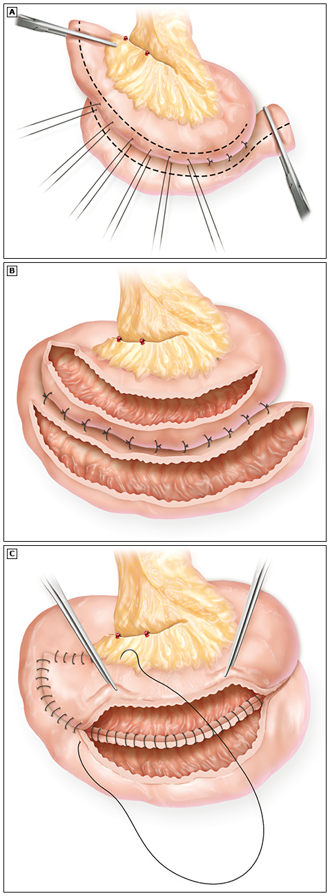
Indicated for long diffuse strictures > 20 cm. Bowel loop is cut at the midpoint, aligned side-to-side isoperistaltically, and opened to perform a long side-to-side bypass.
Contraindications to Strictureplasty:
- Active perforation or hemorrhage at the stricture site.
- Local pelvic/abdominal abscess or active fistulous tract originating from the stricture.
- Suspicion of small bowel malignancy (always biopsy strictureplasty sites).
- Severe localized acute inflammatory thickening (risk of suture pullout; Heineke-Mikulicz requires pliable, fibrotic tissue).
The Kono-S Anastomosis (The Anti-Recurrence Standard):
In patients requiring segmental resection where primary strictureplasty is contraindicated, the Kono-S Anastomosis is a highly specialized, handsewn, side-to-side antimesenteric functional end-to-end anastomosis. By placing the mesentery completely away from the suture line, it dramatically reduces anastomotic recurrence.
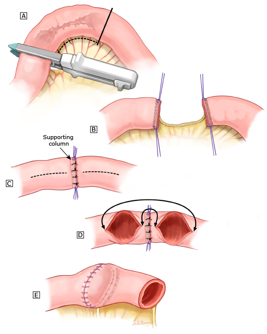
Kono-S execution: (A) perpendicular stapled resection. (B) Back-to-back stump suturing to create a central support column. (C) Longitudinal antimesenteric cuts. (D/E) Single-layer transverse closure, excluding the mesentery.
PROCEDURE C: Colonic Crohn's Surgical Options
The management of colonic Crohn's differs significantly from ulcerative colitis. Because Crohn's is pan-enteric, segment-preserving strategies are highly utilized.
- Segmental Colonic Resection: Indicated for localized Crohn's colitis (e.g., isolated sigmoiditis or right-sided colitis) with a completely disease-free rectum. Preserves colonic length and stool-storing capacity. Associated with a moderate recurrence risk in remaining colonic segments.
- Subtotal Colectomy + End Ileostomy: The procedure of choice in the emergency setting for medically refractory pancolitis, colonic free perforation, or toxic megacolon. Leaves the rectal stump in situ. The rectum can be evaluated later for an ileorectal anastomosis (IRA) if it remains disease-free.
- Total Proctocolectomy + Permanent End Ileostomy: Indicated for diffuse colonic Crohn's with severe rectum destruction, severe perianal sepsis (B3p) destroying the sphincter complex, or multifocal colorectal cancer. Warning: The Ileal Pouch-Anal Anastomosis (IPAA) is strictly contraindicated in Crohn's disease due to a 50% pouch failure rate from localized stricturing, pouchitis, and complex pouch-vaginal/perineal fistulization.
- Ileorectal Anastomosis (IRA): Restores intestinal continuity after subtotal colectomy. Requires a completely healthy rectum with excellent capacity, normal rectal compliance, and normal anal sphincter function.
PROCEDURE D: Perianal Crohn's Surgery & Setons
Approximately 33% of Crohn's patients develop perianal disease. Perianal disease represents a high-risk progressive phenotype that requires aggressive combined medical and surgical coordination.
The Cardinal Rule: Never perform an aggressive cutting fistulotomy in Crohn's. Sphincter muscles do not heal predictably; dividing the sphincter risks permanent fecal incontinence. The surgical goal is strictly sepsis control and drainage, not cure of the fistula.
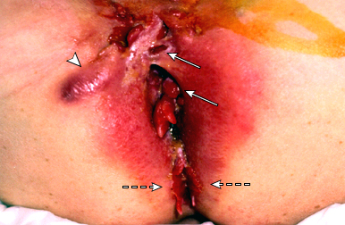
Anterior perianal fistulas involving the vulva and anterior perineum, accompanied by erythematous skin induration and an active perineal abscess.
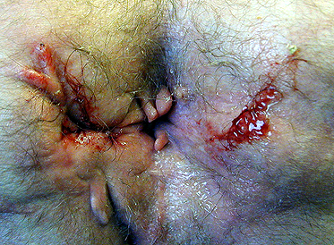
Severe chronic scarring, fibrosis, and anatomical deformity of the perineum resulting from recurrent fistulous tracts and multiple prior drainages.
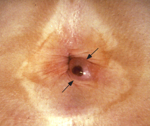
Large, tense, painful thrombosed external hemorrhoid. Note: Hemorrhoidectomy is strictly avoided in Crohn's patients due to extremely poor healing.
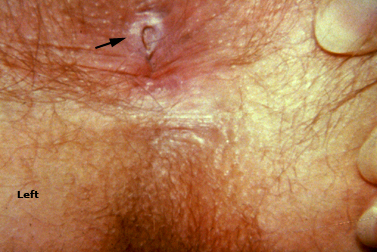
Posterior midline chronic anal fissure exhibiting raised, fibrotic, indurated margins and a prominent hypertrophic sentinel skin tag (sentinel pile).
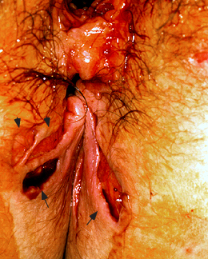
Bilateral posterior draining fistulous openings (arrows) with adjacent deep painful perianal mucosal ulcerations (arrowheads).
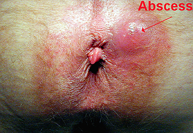
Erythematous, fluctuant bulge with marked surrounding inflammatory edema in the left buttock/perineal region, signifying an acute abscess.
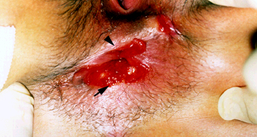
Severe perineal tissue destruction showing a very large, deep posterior ulcer (arrow) coupled with a painful, edematous anterior fissure (arrowhead).
The EUA and Loose Draining Seton Protocol:
- EUA & Proctoscopy First: Every perianal exploration must begin with a formal proctoscopy. Assessing the rectal mucosa is critical; active rectal inflammation at the internal opening is a absolute contraindication to any local repair.
- Sepsis Drainage: Incise and drain any fluctuant abscess cavity.
- Loose Draining Seton: Identify the fistula tract. Thread a silastic or vessel loop seton through the tract, tying it loosely. The seton maintains tract patency, preventing superficial closing that locks in acute sepsis. Loose setons are left in place for months or years.
- Combined Medical Induction: Initiate high-dose Anti-TNF biologic therapy (Infliximab target trough ≥ 10 mcg/mL for active fistulae) combined with thiopurines and metronidazole/ciprofloxacin. Setons are removed only when mucosal healing is confirmed on pelvic MRI.

Landmark UpToDate treatment algorithm: (1) Sepsis control via EUA, abscess drainage, and non-cutting Seton placement. (2) Concomitant Metronidazole/Ciprofloxacin. (3) Rapid induction of anti-TNF biologics (Infliximab target trough ≥10 mcg/mL) with thiopurines. (4) Maintenance and delayed Seton removal.
Technical Pearls & Bail-Out Strategies
Consultant Pearls
The creeping fat also makes the mesentery unforgiving, thickened, vascular, and prone to haemorrhage. Control vessels individually; do not mass-ligate inflamed Crohn's mesentery.
Before you make your proximal ileal division: run 150cm of small bowel proximal to it. Systematically. Every 10cm. Palpate each segment between thumb and forefinger, feel for the characteristic woody firmness of a fibrotic Crohn's stricture. Mark any strictures with a suture. Decide whether they need strictureplasty at this operation.
The rule: in any patient with a known or suspected diagnosis of Crohn's disease, do not perform a fistulotomy. When in doubt: EUA + seton + MRI + gastroenterology review before any definitive sphincter surgery.
The Bail-Out Points
Stop and escalate when:
- The bowel at the planned anastomotic margin is thickened, oedematous, or has creeping fat: Do not anastomose to diseased bowel; extend the resection 2cm further. If extension is not feasible without sacrificing too much bowel, defunction and close; plan anastomosis at a second stage in a better nutritional state.
- The mesentery is too thickened and inflamed to safely divide near the bowel wall without bleeding: Control the haemorrhage; call senior; do not create a mesenteric haematoma in inflamed Crohn's mesentery by pulling blindly on poorly controlled vessels.
- The residual bowel length after the planned resection would be < 150 cm: Stop; reassess; every additional strictureplasty that avoids resection is worth the technical complexity. Call a senior Crohn's specialist.
- You find a pericaecal or intra-abdominal abscess that was not fully characterised pre-operatively: Do not resect and anastomose in the same field as an undrained abscess. Drain the abscess; bring out a defunctioning stoma if needed; plan anastomosis at a second stage in a clean field.
- Frozen section of a strictureplasty biopsy returns dysplasia or carcinoma: Convert to segmental resection with adequate margins. Dysplasia in a Crohn's stricture is treated the same as colorectal carcinoma; call senior.
Post-operative Care & Longitudinal Follow-up
Immediate Post-op & ERAS Protocol
- Fluids: Goal-directed intraoperative fluid restriction. Post-op restrict crystalloids to 1.0–1.5 L/day. Excess fluid exacerbates anastomotic oedema, increasing leak rates. Early sips same evening, free fluids POD1, soft diet POD2.
- Steroid Management: Maintain stress-dose IV hydrocortisone cover for 24–48 hours before reverting to their pre-operative oral prednisone dose. Never abruptly withdraw steroids to prevent an Addisonian crisis.
- Nutritional Support: Initiate supplemental oral enteral nutrition for 4–6 weeks post-operatively in severely malnourished patients to facilitate anastomotic healing.
- Anastomotic Complications Monitoring: Serum CRP is the gold standard. CRP should peak on POD2-3 and decline thereafter. A rising CRP from POD3 onward (> 150 mg/L) indicates an anastomotic leak or pelvic fluid collection; order CT abdomen/pelvis with rectal contrast immediately.
- VTE Prophylaxis: Resume LMWH 12 hours post-operatively. Prescribe a mandatory 28-day course of extended post-discharge LMWH prophylaxis due to their highly pro-thrombotic baseline state.
Post-operative Medical Prophylaxis (Rutgeerts)
Endoscopic recurrence in the neoterminal ileum proximal to the anastomosis occurs in 50–70% of patients within 12 months if untreated. Aggressive post-operative medical prophylaxis is mandatory.
Rutgeerts Post-op Recurrence Score (6-Month Colonoscopy):
- i0: No mucosal lesions. Perfect healing.
- i1: < 5 aphthous ulcers. Minimal inflammation.
- i2: > 5 aphthous ulcers with normal intervening mucosa, or lesions confined purely to the anastomosis. Requires therapy escalation (thiopurines or anti-TNFs).
- i3: Diffuse aphthous ileitis with diffusely inflamed mucosa.
- i4: Diffuse ileal inflammation with large ulcers, nodules, and/or stricturing.
Post-operative Medical Prophylaxis Pathway:
- Low-Risk Patients: First resection, long disease-free interval, non-smoker. Initiate Azathioprine (2.0–2.5 mg/kg/day) within 2–4 weeks.
- High-Risk Patients: History of multiple resections, penetrating disease (B3), perianal disease (B3p), or active tobacco smoker. Start Anti-TNF biologic therapy (Infliximab/Adalimumab) within 2 to 4 weeks of surgery.

Algorithm for postsurgical Crohn's: (1) Risk stratification immediately post-op. (2) High-risk patients (smokers, penetrating B3 phenotype, recurrent resections) start biologic therapy (anti-TNF Infliximab/Adalimumab) within 2 to 4 weeks of surgery. (3) Low-risk patients can undergo clinical surveillance with fecal calprotectin every 3 months. (4) All patients undergo ileocolonoscopy at 6 months to guide treatment escalation based on the Rutgeerts score.
Clinic Follow-up Timeline
- 2-Week Visit: Wound inspection (stoma site hernia, SSI, purse-string healing). Bowel function assessment (set realistic expectations for early impairment).
- 6-Week Visit: Functional assessment. Investigate persistent difficulty (anastomotic stricture is common and amenable to endoscopic dilatation). Early hernias detected should be referred for elective repair.
- 3-6 Month Visit: Long-term functional outcome assessment. Colonoscopy at 1 year for malignancy cases. Reversal discussion for loop stomas.
Complication Management
Complication 1: Anastomotic Leak
Anastomotic leak peaks on POD3-5. Because Crohn's patients are often immunosuppressed (on steroids/biologics), typical peritonitis signs (guarding, rigidity) are blunted. Fever may be absent. Rising CRP is the most sensitive marker.
- Contained Leak (Stable Patient): Managed with bowel rest, TPN, IV antibiotics, and CT-guided percutaneous drain placement.
- Free Leak (Unstable/Septic Patient): Requires emergency re-laparotomy and washout. Warning: Do not attempt primary re-anastomosis or repair in an actively leaking, infected field. Dismantle the anastomosis, create an end stoma, and plan staged reconstruction later when the patient is nutritionally and immunologically optimized.
Complication 2: Post-operative Intra-abdominal Abscess
Intra-abdominal abscess typically presents on POD5-14 with fever, abdominal pain, leukocytosis, and rising CRP. Must be differentiated from a mucosal flare via CT abdomen/pelvis with oral/rectal/IV contrast.
- Anastomosis-related phlegmon (No fluid collection): Manage conservatively with bowel rest, IV antibiotics, and TPN.
- Discrete fluid collection (> 3 cm): Perform first-line CT-guided percutaneous drainage. If associated with a localized minor anastomotic leak, place a defunctioning loop ileostomy to divert the fecal stream. Remove the drain only when output is < 10 mL/24h and clinical sepsis has fully resolved.
- Failed drainage or multilocular abscess: Requires operative exploration, breakdown of loculations, extensive washout, and formal wide drain placement.
Complication 3: Short Bowel Syndrome
Short Bowel Syndrome (SBS) is a catastrophic complication resulting from cumulative small bowel resections.
- Functional SBS: < 200 cm of remaining functional small bowel, causing chronic malabsorptive diarrhoea, steatorrhea, and weight loss.
- Anatomical SBS: < 100 cm of remaining small bowel; permanent parenteral nutrition (TPN) dependence is highly likely.
- Management Protocol:
- Anti-motility agents: Loperamide or diphenoxylate/atropine taken 30 minutes before meals.
- Bile acid binders: Cholestyramine (if ileal resection < 100 cm; cholerrheic diarrhea). Avoid cholestyramine in resections > 100 cm as it further depletes the bile salt pool, worsening fat malabsorption.
- Antiscretory agents: PPIs to reduce gastric acid hypersecretion.
- GLP-2 Analogue: Teduglutide (stimulates mucosal hypertrophy and increases small bowel absorptive capacity).
Crohn's Disease Board-Review Rapid Reference
| Clinical Topic | Critical Board-Relevant Threshold / Fact |
|---|---|
| Distal Limb Assessment | Mandatory before reversal. Requires Water-soluble contrast enema + Flexible sigmoidoscopy. |
| Calprotectin Endoscopy Cutoff | Fecal Calprotectin > 150 – 250 mcg/g warrants diagnostic ileocolonoscopy. |
| Enteral Resection Threshold | Resection of > 100 cm of terminal ileum destroys bile salt pool, causing fat malabsorption. |
| Cholerrheic Diarrhea Resection | Resection of < 100 cm of terminal ileum, treated with bile-acid binding resins (cholestyramine). |
| Heineke-Mikulicz Length | Indicated for small bowel strictures ≤ 5 – 7 cm. Accountable for 85% of cases. |
| Finney Strictureplasty Length | Indicated for medium small bowel strictures 10 – 20 cm. |
| Michelassi Strictureplasty Length | Side-to-Side Isoperistaltic strictureplasty, indicated for long strictured segments > 20 cm. |
| Active Fistula Infliximab Trough | Higher target trough of ≥ 10 mcg/mL is preferred to promote fistula healing (normal target ≥ 5). |
| Seton Placement Principle | Setons must be non-cutting to maintain drainage. Avoid cutting Setons in IBD to preserve continence. |
| Rutgeerts Surveillance Interval | Perform ileocolonoscopy 6 to 12 months post-op. Grade i2 or higher warrants immediate treatment. |
| Post-op Biologic Prophylaxis | Start Anti-TNF within 2 to 4 weeks post-operatively for patients with high-risk recurrence modifiers. |
| Strongest Modifiable Risk Factor | Tobacco Smoking, doubles the risk of disease flares, strictures, and post-operative recurrence. |